A7 新林口 社區網站
網站宗旨
A7 新林口 社區網站是提供給A7 重劃區的居民資訊溝通平台。A7 重劃區是全新的社區造鎮, 居民搬遷到此需要對新的生活環境有全面的認識。本網站將提供居民全面性的資訊溝通管道。
本網站匯總在 A7, A8, A9 的商圈, 娛樂等資訊，提供 A7 居民生活所需的資訊查詢網站。 作業模式:
- 提供區域議題的資訊交流及共享。忠實紀錄社群討論議題，提供腦力激盪的開放平台。
- 匯總所有資訊來源，系統性綜合整理與呈現。讓討論能有效率的進行，作業將嚴守中立，不預設立場。
- 作業範疇將包含地區居民所關切的生活議題。由食衣住行到育樂活動, 建立有效率的智慧生活基礎。
- 作業人員秉持地區志工的精神，為此一地區創造和諧與進步。
| 網站 | 臉書 Facebook |
請加入我們的臉書社團 A7新林口-社區網站 共同創造我們的智慧樂活環境！
Facebook image post anyimage: image size for Facebook: 492 x 276 pixels
南北桃園的分界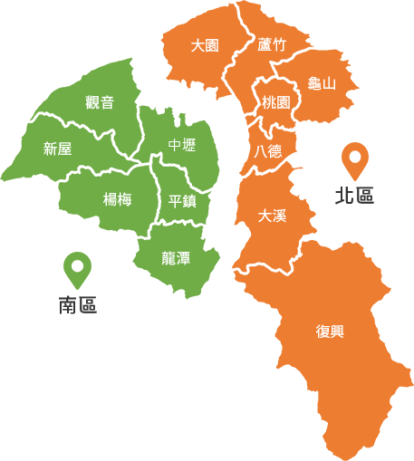
A7站區開發案興辦事業計畫
- 2022/09/20 內政部 都市計畫委員會第 1019 次會議紀錄 「變更林口特定區計畫（第四次通盤檢討）（第三階段）案
- 2021/01/05 修訂 變更林口特定區計畫（配合工五工業區產能提升計畫-工五工業區擴大方案）案 計畫書
- 2010/04 A7站區開發案興辦事業計畫-細部計畫書
- 2010/03/10 A7站區開發案興辦事業計畫-草案
- 2010/03/10 A7站區開發案興辦事業計畫-土地管制要點
- 2019/09/17 A7站區開發案興辦事業計畫-第二階段
- 2015/06 A7站區開發案興辦事業計畫-第三階段
- 2018/09/27 A7重劃區-工程成果簡介
- 2010/03/10 機場捷運A7站開發案簡報(990311
- 2015/08/31A7站地區都市設計審議
大林口共同生活圈
本網站將提供 大林口共同生活圈的相關資訊，提供智慧社區的共享平台。包含- A7 優質住宅區
- A8 機能商圈區
- A9 娛樂生活區
圖來自：ETtoday房產雲
A7 重劃區 街道圖 OpenStreetmap, ZhupiterMap
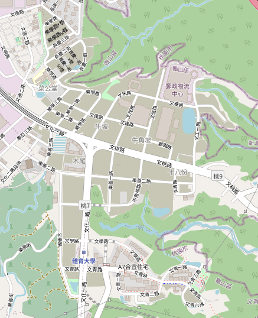
社區社群連接
#A7重劃區 關鍵字 所關聯的網路資訊- 痞客邦 #A7重劃區: #A7重劃區 關聯的部落格文章
- Instagram #A7重劃區: IG 中有關A7重劃區的 照片
- Instagram #A7新林口-社區網站 : IG 中建案照片
- A7新林口-社區網站: 本網頁更新時臉書公告管道。
- * A7重劃區大小事: A7食衣住行育樂大小事 #社區網站
- * 新A7 重劃區準鄰居:購屋住戶社群 #社區網站
- * 桃園龜山A7林口重劃區：A7 房屋買賣社團 自售或房仲
- A7龜山區文青里
- A7重劃區房屋買賣: 房仲賣屋、屋主自售、建商活動等
- A7重劃區工商服務: A7店家廠商廣告等
- A7合宜2021~2022釋屋
- 好房網 桃園重劃區、新建案討論
- iA7 林口合宜住宅 出租區
- 裝修最新設計分享
- 桃園龜山A7裝潢大小事
- 裝潢價格資料庫 第三方查價平台
- A7生活圈 Life Circle Of A7
- A7易物網
- 林口換物、贈物社團
- A7 Area 交通 & 建設與生活
- * 林口大家庭 linkou-family
- 林口美食餐廳推薦
- 桃園.中壢吃喝玩樂看這裡
- 桃園美食地圖
- 桃園美食旅遊頻道
- 桃園好吃好玩又好逛生活美食資訊分享旅遊景點討論
- 桃園吃貨
- 大台北美食地圖(含基隆)
- 台灣美食地圖(大台北除外)
- 台灣美食團
- 美食分享天地
- 全台灣好吃好玩的美食旅遊天地
- 台灣好吃美食好玩景點道相報
- 美食旅遊筆記本
- 爆料美食旅遊地圖
A7重劃區 開放式 社群
社群/公益網站:- Step30 舊鞋救命
- 中華黃頁 網路電話簿
行政單位官網
- 長庚里： 長庚里暨長庚醫護社區
- 樂善里: 樂善里
- 文化里：桃園市龜山區文化社區發展協會
- 文青里： A7龜山區 文青里, 桃園市龜山區文青社區發展協會
社區資料與紀錄
- 龜山地方刊物: 龜山地方報- 龜山不是島, 龜山地方報第二刊出版 探索大坪頂文史
- Mobile 2020/11/29: A7重劃區各建案與捷運距離及重大建設資料整理
- 內政部發言人室 2018/09/27: 土地重劃工程處機場捷運A7站地區區段徵收公共工程 成果簡介
寶貝 家庭 親子網站
資料來源：痞客邦 2015/09/04- Facebook 孕媽咪寶貝 - 提供熱門親子討論教育話題、孕期及產前產後保養、嬰幼兒餵養、二手母嬰用品交易、親子好去處資訊等。
- BabyHome 育兒, 持家, 愛自己 - 提供懷孕及育兒資訊、相簿及親子日記等內容。
- 台灣母乳協會 - 提供餵哺知識及交流討論等內容。
- CombiBaby - 產前產後討論區 生產相關問題討論。
- MallDJ - 提供懷孕及育兒資訊、婦幼百科、寶寶相簿、醫師諮詢、嬰童用品等。
- 嬰兒與母親 - 雜誌回顧,出版刊物,諮詢,相關網站,優生保健,孕婦,讀者園地。
- 奇蜜親子網 - 父母社群網站,提供親子育兒資訊、網路線上玩具店、家庭討論區、電子報。
- 孕媽Q寶 - 親子活動,親子贈品,親子話題討論,醫師線上諮詢討論
- 寶貝花園 - 育兒知識媽媽經驗分享。
2023年 A7重劃區十大建設 居民期望票選結果
2023/03/14- 國1林口交流道改善工程
- 龜山樂善公墓遷移計畫 及森林公園建設
- 中華郵政工商服務中心, 多功能商場建設
- 多功能滯洪池全面改善 / 區域衛星公園建設
- A7景觀大道 全面規劃 及邊坡整體景觀綠化
- A7圖書館
- A7廣場開發 廣18, 廣19 地下停車場及廣場活動設施
- 文學路,樂善一路延伸計畫
- 區域立體連通空橋貫通
- 龜山國民運動中心
A7地區民眾最期望的十大建設 民意調查 結果 - 2023/03/14
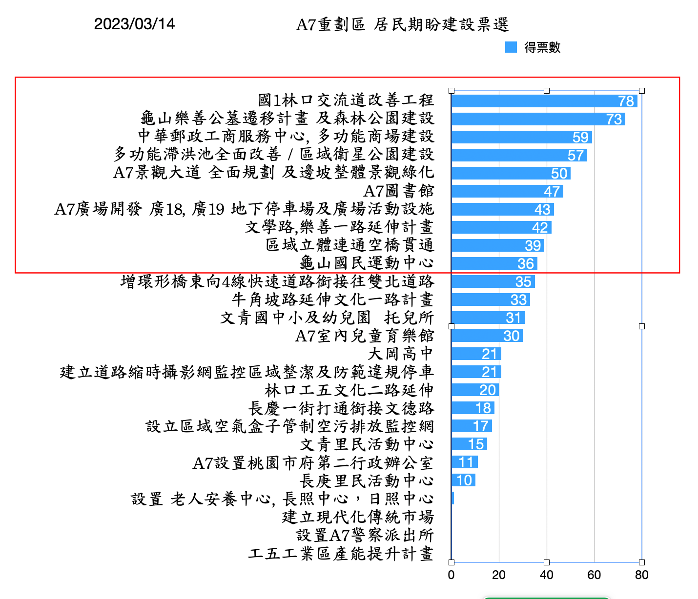居民期望以 交通網絡, 自然環境 及 文化娛樂為主要方向，如下圖
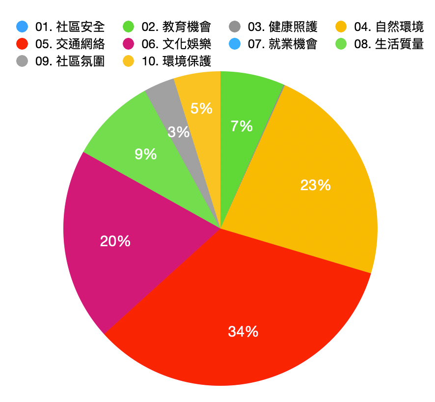
A7 全方位宜居城市十年規劃
宜居城市的要素及A7期盼的建設- 1. 社區安全：人們希望生活在安全的社區，不用擔心犯罪或其他安全問題。
- 1.1 文青里民活動中心: 設置警察派出所
- 2. 教育機會：人們希望有良好的教育機會，包括優秀的學校、圖書館和其他教育資源。
- 2.1 文青國中小及幼兒園 托兒所
- 2.2 大岡高中
- 3. 健康照護：人們希望有良好的健康照護，包括高品質的醫療設施和醫生。
- 3.1 設置 老人安養中心, 長照中心，日照中心
- 4. 自然環境：人們希望生活在美麗的自然環境中，包括公園、綠化帶、河流和湖泊。
- 4.1 龜山樂善公墓遷移計畫 及森林公園建設
- 4.2 多功能滯洪池全面改善 / 區域衛星公園建設
- 4.4 A7景觀大道 全面規劃 及邊坡整體景觀綠化
- 5. 交通網絡：人們希望有便利的交通網絡，包括公共交通、自行車道和步行路線。 A7期盼的建設包含
- 5.1 國1林口交流道改善工程
- 5.2 牛角坡路延伸文化一路計畫
- 5.3 文學路,樂善一路延伸計畫
- 5.4 林口工五文化二路延伸
- 5.5 區域立體連通空橋貫通
- 5.6 增環形橋東向4線快速道路銜接往雙北道路
- 5.7 長慶一街打通銜接文德路
- 6. 文化娛樂：人們希望有豐富的文化娛樂活動，包括音樂、電影、戲劇、美術和博物館。
- 6.1 龜山國民運動中心
- 6.2 A7圖書館
- 6.3 A7室內兒童育樂館
- 6.4 A7廣場開發 廣18, 廣19 地下停車場及廣場活動設施
- 7. 就業機會：人們希望有充足的就業機會，包括多樣化的工作類型和產業。
- 7.1 工五工業區產能提升計畫
- 8. 生活質量：人們希望擁有精緻的住宅和良好的生活質量，包括高品質的飲食和購物體驗。
- 8.1 中華郵政工商服務中心, 多功能商場建設
- 8.2 建立現代化傳統市場
- 8.3 A7設置桃園市府第二行政辦公室
- 9. 社區氛圍：人們希望生活在友好的社區氛圍中，包括友好的鄰居、公共活動和社區參與。
- 9.1 文青里民活動中心
- 9.2 長庚里民活動中心
- 10. 環境保護：人們希望生活在環境保護和可持續發展的社區中，包括清潔的空氣、水和土地。
- 10.1 設立區域空氣盒子管制空污排放監控網
- 10.2 建立道路縮時攝影網監控區域整潔及防範違規停車
希望市長能加強的方向
- 建立市政長期規劃方案，建構基北北桃 生活圈。打造大生活共榮生活城市。
- 加強精實市政管理, 打造桃園亞洲智慧新都。
- 提升政府行政透明化，提高公民參與市政。
- 穩健區域產業發展, 完善創業投資環境
- 營造永續環境, 建構綠化生態環境
希望議員能努力的方向
- 深入鄰里/社區管委會，聆聽社區居民的需求。並整合相關意見及里長的行動計畫。
- 時時依據社區媒體與居民做網路聯繫。建立民意調查機制，有效掌握民意深入居民問題核心。
- 建立市民與政府的有效溝通管道，充分反映民意外，並協助提升公民參與市政。
- 協助建立市府行政透明化，有效監督審查公共建設的品質及時程。
- 建立服務網站資訊, 系統化提供問政績效與民眾做直接雙向溝通。
| 狀態 | 社區網站 | 進度摘要 | 社區網 |
|---|---|---|---|
| {{ item.Status}} | {{ item.Item}} | {{item.Id}} |
區域停電/限電
台電限電組別說明：全台用電戶分為A、B、C、D、E、F、H、I、J等9組，
I組的特高壓工業用戶因已優先實施5階段限電措施、不會再次限電；J組是台電電廠配電線路的變壓器饋線，H組是國防、交通等要地，也都不會被限電。
會被限電為 A、B、C、D、E、F 組，其中 A、B 組被歸為緊急限電組，C、D、E、F 組歸為計劃限電組。
只要查自家電費單或上網查詢電子帳單都會註明限電組別。A7 重劃區 應該都屬於 B 組，(如有誤請留言修訂)。
本次5/17起限電計畫：
若需要實施民生限電，台電將會針對C、D、E、F四組進行規劃，並從C組開始實施停電，待50分鐘後再輪到D組停電，接著才是E、F組；如果情況再更惡化，輪流停電時數將可能延長至數小時。
屬於緊急性限電的 A、B 兩組，如果當天有機組發生故障意外，停電需求增高，除了原本C至F四組輪流停電外，A、B兩組才會加入停電行列。
相關資訊網
- 台電官網 各區停電公告
區域停水
桃園市水情 5/20日 轉橙燈，5/21日起實施減量供水。 因水情吃緊，桃園市5/21起實施非民生用戶減量供水，不影響民生用水。減水措施包含，停止試放消防栓、露天屋頂放流等非必要用水，每月用水超過1,000度之非工業用水戶減供20%、工業用戶減供13%、其他不急需之用水減供20%。
另外，桃市府已擴大盤點88口民生備用水井，完成各區水塔採購，並規劃臨時供水站，7處水資源回收中心，預計可供應每日8萬噸放流水，持續整備水源及推動各項抗旱措施。 為了加強節水率，桃園各市立游泳池、運動中心及學校游泳池6/8前停止營運，抗旱節水大家一起來！
相關網站：
天氣環境監控
空氣品質
相關網站：- 桃園空氣污染 實時空氣質量指數 AQI
- 桃園空氣及天氣預報 桃園空氣質量
- 行政院環保署 空氣品質監測網 地方環保局
- 環保署 愛環境：空氣品質指標 AQI, PM2.5
- 空氣盒子 即時監測
- 環保署 環境即時通-綠生活地圖：APP 下載
- 中央氣象局 風場預報
地區濕度分析
林口潮濕嗎？民眾怎麼說？- FB 林口大家庭 2020/09/03 住林口的人現在還會覺得林口很潮濕嗎？
- 新新聞 2021/07/17: 林口濃霧多、濕氣重，房價也跟著往下掉？在地住戶公開真相
- 房市普拉斯 2021/02/01: 林口霧氣濕交通塞？真的假的！
- 移民台灣 2020/01/26: 直擊林口日與夜之霧
- USTV 非凡Daily 2019/12/24: 移居林口行不行?! 塞車.濕氣重?!
- 今日新聞 2019/11/25: 林口、汐止哪裡濕度較高？ 市民揭兩處最大差異
實際數據/學理上怎麼看？
- 中央氣象局 氣候資訊
- CODiS氣象觀測站 觀測資料查詢
- 順威 空氣知識 2020/06/24 關於除濕的三大迷思
- 康健 2017/03/31: 台灣原來這麼濕！６關鍵讓家裡乾爽健康
- 壹讀 2020/07/14: 樓層越高，住房越乾燥嗎？
- 氣象達人 2005 的分析: 台北與林口濕度比較
2020 年：龜山相對濕度/氣溫與 相關城市的比較：依據 2020 龜山氣象 觀測站 (位於體育大學運動場) 數據， 龜山相對濕度在冬季 比台北信義區高3~4％, 同時氣溫 全年平均低 1.6 度。如與汐止相較 相對濕度全年都優於汐止。
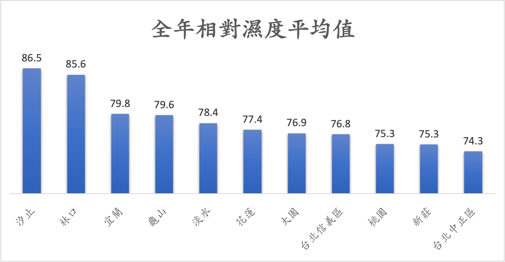林口 資料不全，下圖希望比較龜山（體育大學）與林口（林口高中）的相對濕度差異。似乎應證 傳聞 林口與汐止 同樣濕？ 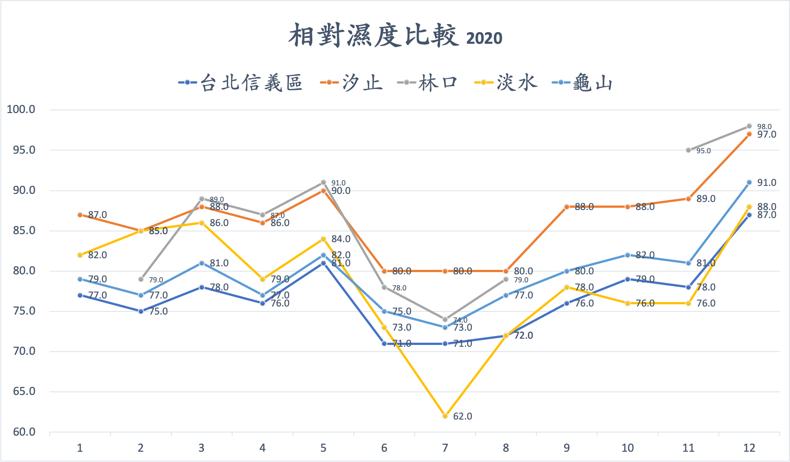 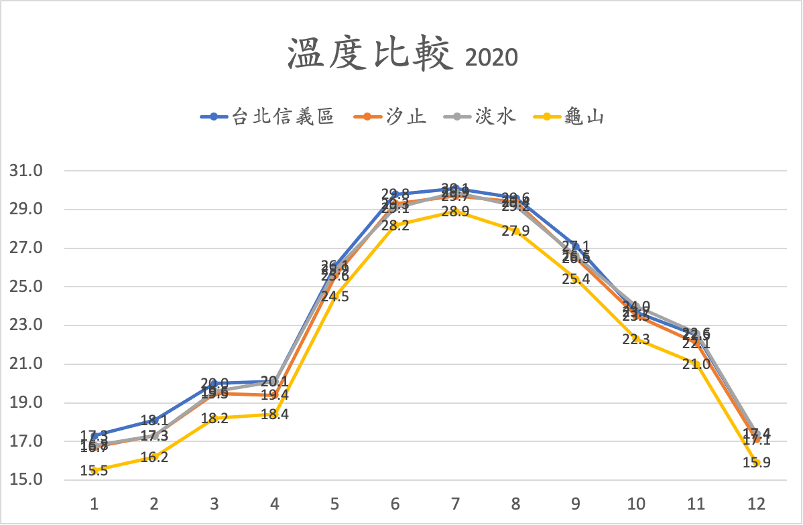
台北與林口的四季濕度比較: 以顏色標示的為台北，以線條標示的為林口。資料來源 2005 氣象達人
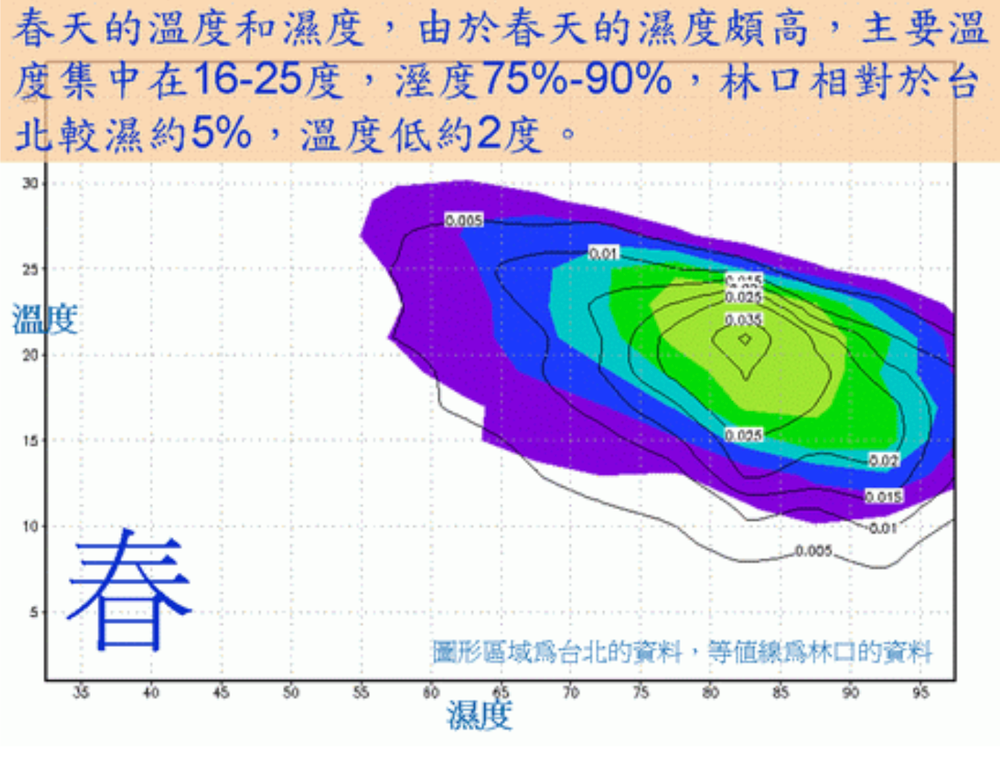 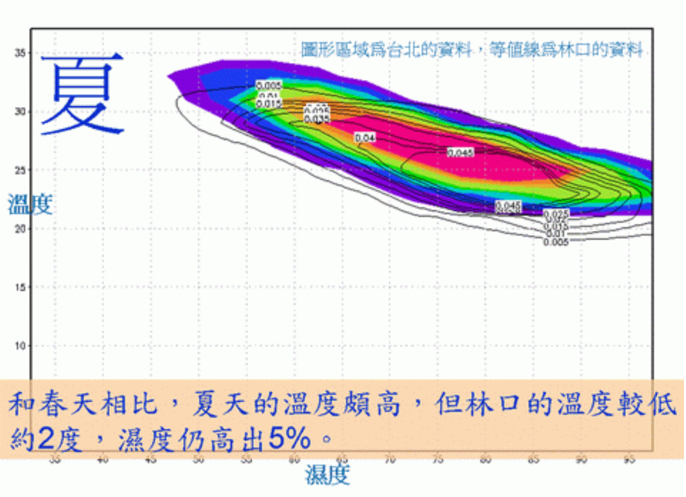 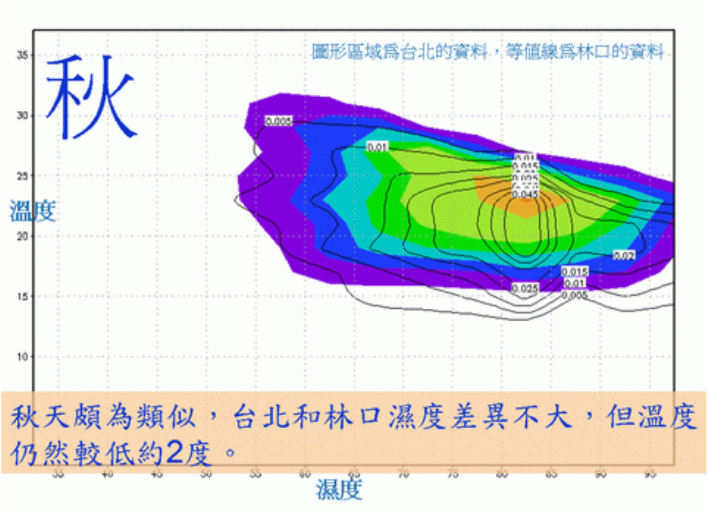 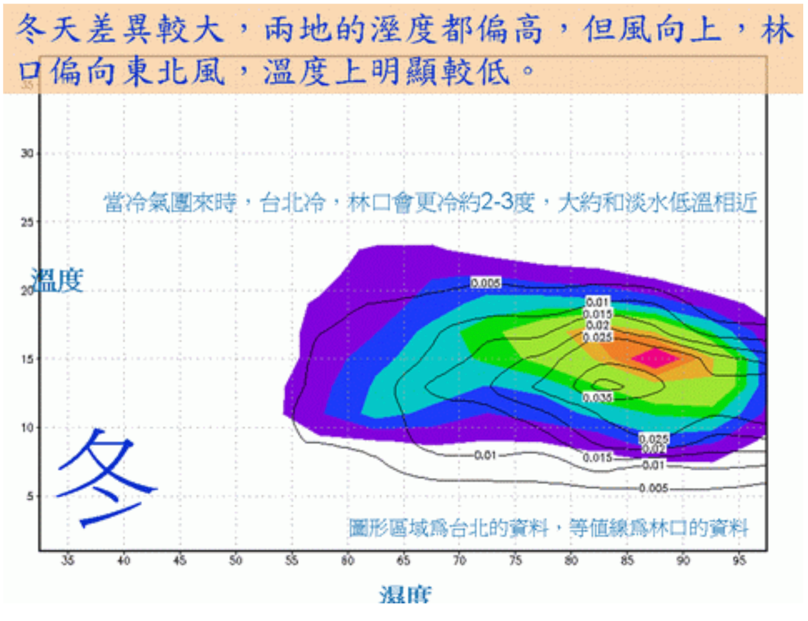
2005 年：台北與林口在濕度上的比較 （依據 2005 氣象達人 或 網路資料匯總，不代表官方/專業意見）
- 感受的舒適度在溫度與溼度分佈圖上的區域, 如下圖
- 整體而言, 林口相較台北在相對濕度上會高 5%, 但氣溫低 2 度。 所以體感舒適度上只有冬季會較濕也較冷。其他三季 林口在濕度感受上與台北差異不大。
- 冬季如要改善舒適度需要開除濕機。如加上下雨日, 全年對除濕機的需求上，兩地全年平均需求差異也不大。
- 潮濕與樓層沒有直接關連，主要是是否通風及日照是否良好。保持房間的通風及日照才是重點。
- 台灣北部多數地區，濕度對生活的影響不及下雨天數。林口的下雨天數其實低於許多雙北地區。（需要進一步統計）
天氣觀測站紀錄
CODiS氣象觀測站 2020年 觀測紀錄, 龜山觀測站 設在體育大學運動場。其他北部/東部對照區可自行選擇查閱。選擇地區
| 月份 | 測站氣壓(hPa) | 氣溫(℃) | 風速(m/s) | 風向(degree) | 降水量(mm) | 降水日數(day) | 最大日降水量(mm) | 相對溼度(%) |
|---|---|---|---|---|---|---|---|---|
| {{ post.Month }} | {{ post.StnPres }} | {{ post.Temperature }} | {{ post.WS }} | {{ post.WD }} | {{ post.Precp }} | {{ post.PrecpDay }} | {{ post.PrecpMax }} | {{ post.RH }} |
颱風資訊
- Windy 颱風動向圖
- 經濟部水利署 防災資訊服務網 淹水即時感測
- 中央氣象局 一週氣象預報, 雨量預報
- 地區雨量 詳細資料： 區域雨量圖, 雨量 - 十分鐘資料, 雨量 - 整點小時資料, 雨量 - 各縣市最大值
- 桃園市水情資訊網 水情 - 雨量站
淹水感測器
龜山 淹水感測 位置圖: 使用淹水即時感測連接，可查詢在文化一路，及文化二路上各有3個淹水感測器的自動測試結果。（目前沒有人工校正的數值，僅供參考）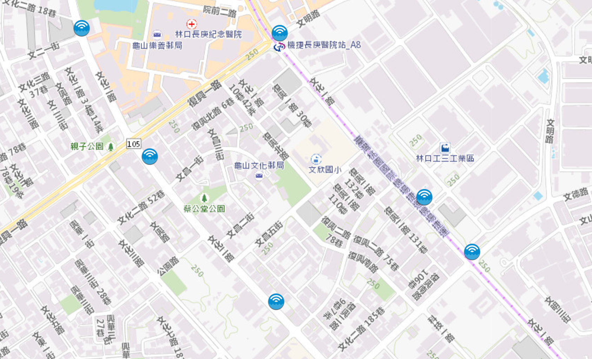
雨量觀測點
使用桃園市水情資訊網 - 雨量站, 開啟雨量站選項，可查閱桃園水務局 文欣國小雨量站, 或中央氣象局 體育大學的龜山觀測點 雨量資料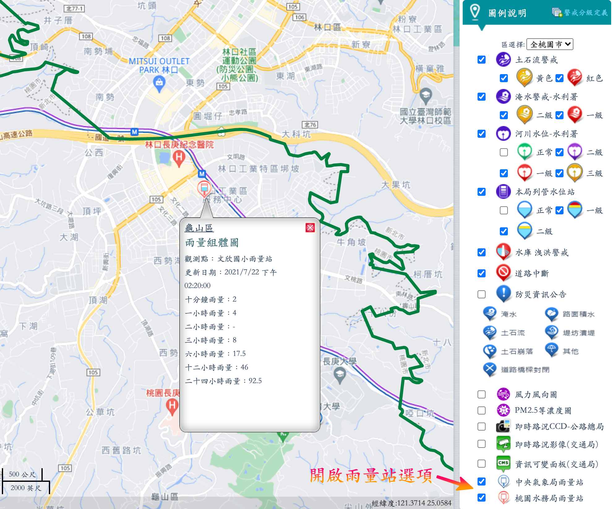
Costco 信用卡換發
國泰世華聯名卡
美式賣場好市多（Costco）與國泰世華銀行合約到期在即，國泰世華的Costco聯名卡將於2023年8月7日停止使用，連同大家常用的Costco Pay都將終止服務。國泰世華將在2022年12月起陸續為Costco聯名卡持卡人換發相同國際信用卡組織與卡片等級之CUBE卡。未來國泰CUBE卡將無法在好市多賣場內使用。 換發後的CUBE卡享首年免年費，次年起年費為1800元，而次年起的免年費門檻如下，只需符合三者任一條件即可，建議民眾可以在辦卡時，直接申辦電子帳單最簡單：
- 申辦電子帳單。
- 正卡年消費12次（含）以上。
- 正、附卡年消費達18萬（含）以上。
至於想要透過線上客服辦理取消換卡者，前往國泰世華官方網站，點選線上客服「阿發」即可找到「Costco屆期說明」以及「申請不換發Cube卡」的選項。
如何申辦好市多 儲值卡
未來不想申辦新的好市多聯名卡又想到好市多購物的民眾，其實還是可以持會員卡前往櫃台臨櫃購買「儲值卡」，沒有使用期限及次數限制，只要按時儲值現金即可，另外，如果想將儲值卡給其他人使用，非會員需加收5％服務費，首次須儲值1000元台幣，後續每次最低儲值金額為新台幣500元。Costco現金儲值卡無使用期限也沒有使用次數的限制，最高可以儲值3萬元，也可以於加油站使用。另外，Costco的儲值卡也可以轉交給非會員使用，不過非會員持儲值卡消費將加收5%服務費，且非會員需前往櫃台申辦臨時購物證才可進入賣場消費，每年僅能擇1賣場申辦1次臨時購物證。
台北富邦 Costco 聯名卡如何申辦
台北富邦Costco聯名卡有哪些申辦方式 富邦J卡，不僅在國內消費有最高2.2%的回饋，大家出國最愛去的日韓更是最高有5%的回饋，更有加油、LINE禮物、J卡日等超多高回饋活動也都等著你，另外目前卡優新聞網也推出獨家首刷加碼，除了享原本最高300元的首刷禮外，還能額外再拿100元超商購物金，總共有4個申辦方式：1.透過台北富邦官網線上申辦，可透過電腦或行動裝置上傳資料，免列印回傳最方便；2.透過台北富邦分行臨櫃申辦，由分行直接送件；3.至Costco賣場找駐點人員申辦，由駐點服務人員送件；4.索取或上網列印申請書，填寫並列印相關文件證明後寄到指定信箱。
相關資料
- 新新聞 2023/01/31 2023好市多Costco換卡懶人包 - 8大QA看懂怎麼換聯名信用卡、年費繳多少，不辦新卡用1招仍可消費
- Cool3C 2022/11/21 Costco好市多換卡懶人包 - Costco好市多聯名信用卡如何換卡？如何取消國泰世華換卡？儲值卡怎麼申請？
- Cardu 2023/02/17 台北富邦Costco聯名卡申辦、換卡全攻略！
年度報稅 2023
如何取得查詢碼
- 於財政部電子申報繳稅服務網以自然人憑證、健保卡、電子憑證或行動電話認證於線上取得查詢碼: 所需條件
- 健保卡+註冊密碼: 健保卡, 讀卡機
- 自然人憑證: 自然人憑證卡, 讀卡機
- 電子憑證: 電子憑證, 憑證密碼
- 行動電話認證: 手機＋月付門號(需要使用行動網路, 需關閉Wifi) , 健報卡號
- 於國稅局臨櫃申請查詢碼
- 若適用稅額試算者，在其所收到之稅額試算通知書首頁已附印查詢碼(免赴國稅局申請)。
- 於四大便利超商(統一、全家、OK、萊爾富)多媒體資訊機以自然人憑證或已註冊之健保卡驗證身分後，即可取得查詢碼。
報稅注意事項
垃圾回收分類
桃園市 垃圾回收規定： ,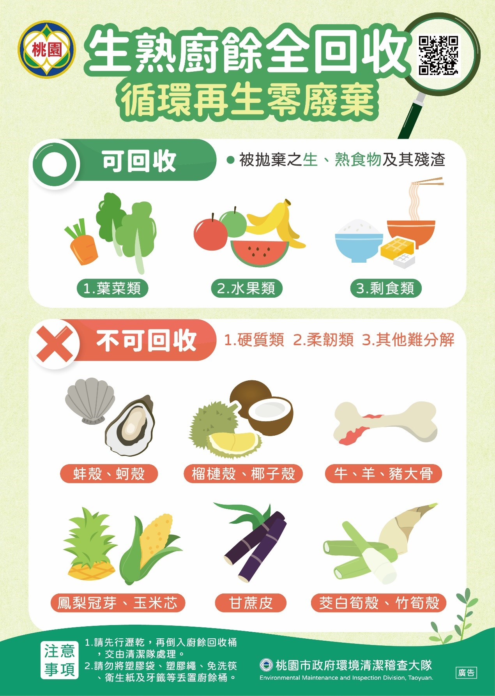
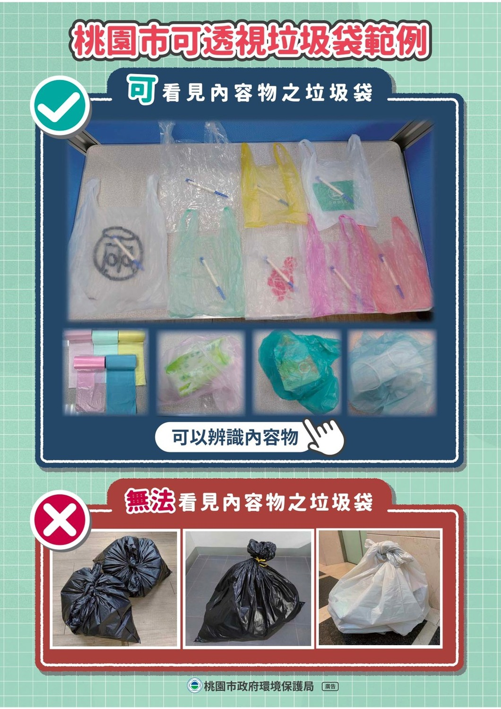
桃園廚餘全回收 新政策
日後不再區分生、熟廚餘，而是區分可回收與不可回收廚餘。「可回收廚餘」包含葉菜類、水果類、剩食類等生、熟食物及其殘渣；「不可回收廚餘」則為蚌殼、蚵殼、榴槤殼、椰子殼、大骨、鳳梨冠芽、玉米芯、甘蔗皮、筊白筍殼、竹筍殼等硬質或柔韌的部分，希望能藉由有效處理廚餘進而減輕垃圾處理壓力。2022年4月1日 起強制執行後，不論是廚餘當一般垃圾丟，或者蚵殼、豬大骨丟進廚餘桶，都將視為違規，依廢棄物清理法可處1200元到6000元罰鍰。
可透視垃圾袋政策
可透視垃圾袋政策在2022年4月1日至6月30日進行為期3個月的宣導，7月1日起正式實施；若民眾在宣導期內未使用可透視垃圾袋，清潔隊員會予以勸導，正式實施後則會拒收未使用可透視垃圾袋的垃圾，屆時未依規定者將處新台幣1200至6000元罰鍰。全民共享普發現金 $6,000
相關資訊- 6000普發 登記官網
- 6000普發 宣導網站
- ETtoday 新聞雲 2023/03/22 7招「放大6000元」！ 最高變6萬、現賺一支iPhone
- 3/28起開放查詢!須注意!無法進行登記修改!僅供查詢網站 登記結果
- 選擇「直接入帳、登記入帳、偏鄉領取」可望最早於4月6日拿到， 「ATM領取現金 」預計4月10日 ， 「郵局臨櫃領取現金」預計4月17日 。
- 上網登記領取 期間:112年3月22日~112年10月31日
- 普發6千元登記入帳: 用哪家銀行最划算
普發現金6000元規畫採「登記入帳」、「ATM領現」、「郵局領現」、「直接入帳」及「造冊發放」5種方式，方便民眾領取。今年3月22日8點起先開放「登記入帳」預登記，視特別預算完成法定程序後再辦理撥付，後續陸續開放「ATM領現」及「郵局領現」作業，另「直接入帳」及「造冊發放」方式，將由政府協助辦理。
專屬6,000網站（https://6000.gov.tw）將於3月22日上午8時起提供預登記服務 ，民眾只要透過手機、平板或者電腦上網填寫必要資料，免讀卡機、免插卡，後續登記資料經過系統核驗無誤，即可輕鬆讓6,000元自動入帳到指定的本人金融帳戶。
登記期間前5日（3月22日至3月26日）將採身分證字號或居留證號尾數分流，每日開放兩組尾數的民眾登記，並將在3月20日以抽籤決定尾數分流順序。 3月27日起不分流，民眾皆可登記，並於3月28日起開放修改以及查詢登記資料是否正確、符合領取資格等資訊。登記系統預計開放至少6個月，確切截止日期以行政院公布為準。
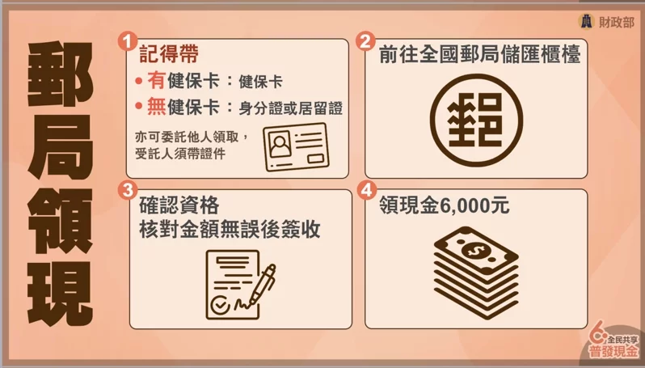
綜合資訊
飛機禁止攜帶物品
- 中華航空 禁運品
- 長榮航空 行李遺失與損壞及攜帶限制
- 加拿大航空 Restricted and Prohibited Items
- Lifestyle 2019/11/10 搭飛機哪些東西不能帶？